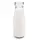
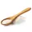
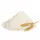
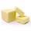

Crêpes: la meilleure recette rapide
4.5 / 5
basé sur
4 873 avis
Découvrez cette recette facile de crêpes, très rapide à préparer. Une recette simple qui, grâce à sa quantité d'œufs, ne nécessite aucun repos de la pâte (vous pouvez adapter le volume des ingrédients selon le nombre d'œufs que vous avez, les crêpes seront aussi parfaites avec 1 œuf, ou 2 œufs). À préparer à la Chandeleur, pour un brunch ou à tout moment que l'envie vous prend.
Ingrédients
4
personnes
-
Farine 250 g
-
Oeuf 4
-

Lait ½ litre
-

Sel 1 pincée
-

Sucre 2 c à s
-

Beurre fondu 50 g
Préparation
- 1 Mettez la farine dans un saladier avec le sel et le sucre.
- 2 Faites un puits au milieu et versez-y les œufs.
- 3 Commencez à mélanger doucement. Quand le mélange devient épais, ajoutez le lait froid petit à petit.
- 4 Quand tout le lait est mélangé, la pâte doit être assez fluide. Si elle vous paraît trop épaisse, rajoutez un peu de lait. Ajoutez ensuite le beurre fondu refroidi, mélangez bien.
- 5 Faites cuire les crêpes dans une poêle chaude (par précaution légèrement huilée si votre poêle à crêpes n'est pas anti-adhésive). Versez une petite louche de pâte dans la poêle, faites un mouvement de rotation pour répartir la pâte sur toute la surface. Posez sur le feu et quand le tour de la crêpe se colore en roux clair, il est temps de la retourner.
- 6 Laissez cuire environ une minute de ce côté et la crêpe est prête.
-
Pour finirRépétez jusqu'à épuisement de la pâte.